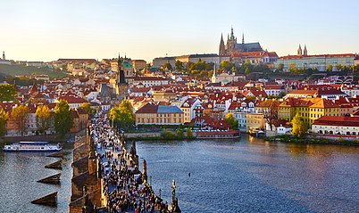

PRAGUE
ROME

The Czech capital is dubbed “the city of the thousand spires” because of its many historical monuments that have been beautifully preserved and date from practically every period in history.Prague is the capital and largest city in the Czech Republic. On the Vltava river, Prague is home to about 1.3 million people. The city has a temperate oceanic climate, with relatively warm summers and chilly winters. Prague's most famous attraction are the bridges that cross the Vltava River, especially the amazingly elegant Charles Bridge, but the stunningly beautiful Old Town Square and Prague Castle are equally impressive. Add the cobblestone streets and atmospheric alleyways that zigzag through town, and you know that few other cities delight the senses as much as Prague.
Located on seven hills overlooking the Tiber River, the city of Rome is a treasure-trove of ancient monuments, that are inspired by grand classical architecture and set among some of the world's most beautiful squares and avenues. Of course, everyone visits the Eternal City for its famous landmarks and must see sights such as Vatican City with St Peter's Basilica, the Colosseum with adjacent Roman Forum, and Piazza Novona with the nearby Trevi fountain. But don't forget to visit the less known Trastevere district as well, filled with faded palazzi, picturesque streets, and lovely homes decorated with flower boxes. Rome's history spans 28 centuries. While Roman mythology dates the founding of Rome at around 753 BC, the site has been inhabited for much longer, making it a major human settlement for almost three millennia and one of the oldest continuously occupied cities in Europe. The city's early population originated from a mix of Latins, Etruscans, and Sabines. Eventually, the city successively became the capital of the Roman Kingdom, the Roman Republic and the Roman Empire, and is regarded by many as the first-ever Imperial city and metropolis.
Skardu is a city located in Gilgit-Baltistan. Pakistan. Skardu serves as the capital of Skardu District and the Baltistan Division. It is situated at an elevation of nearly 2,500 metres (8,202 feet) in the Skardu Valley, at the confluence of the Indus and Shigar Rivers. The city is an important gateway to the eight-thousanders of the nearby Karakoram mountain range. The Indus River running through the region separates the Karakoram from the Ladakh Range.The Skardu region was part of the cultural sphere of Buddhist Tibet as early as the founding of the Tibetan Empire under Songtsen Gampo in the mid 7th-century CE. Tibetan tantric scriptures were found all over Baltistan until about the 9th century. Given the region's close proximity, Skardu remained in contact with tribes near Kashgar, in what is now China's westernmost province of Xinjiang. Following the dissolution of Tibetan suzerainty over Baltistan around the 9th-10th century CE, Baltistan came under the control of the local Maqpon Dynasty, a dynasty of Turkic extraction, which according to local tradition, is said to have been founded after a migrant from Kashmir named Ibrahim Shah married a local princess.